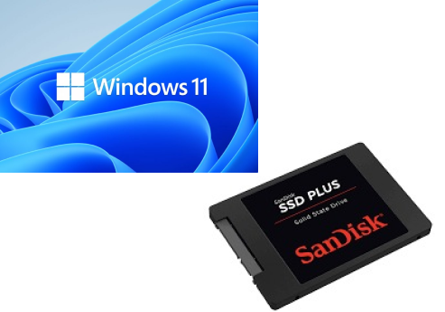
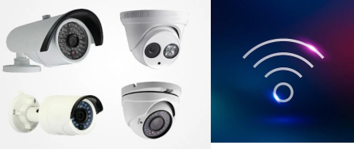
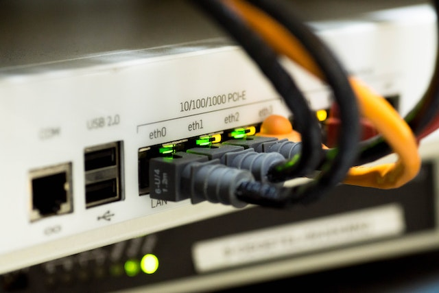
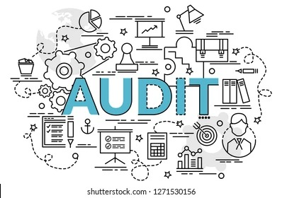

Our Services
ICT Support & Cloud Services

Tired of organising multiple suppliers and support contacts, and constantly organising or chasing various third parties? Whether you require a Proactive Maintenance Plan, or a Fixed-price Service Agreement to assist with budgeting, Our IT Support will customise a support contract to meet your needs.We offer a very wide range of support plans to suit every business type and size.Our plans can be signed up on an as-needed basis, or a month to month agreement, or for the best value on a term agreement. With no lock-in contracts required, you can have certainty, as well as no financial surprises.ASIT's managed IT support will typically include routine maintenance on your servers to ensure they are running at their best, cleaning of temporary or potentially malicious files, update software, in particular where the update may include security patches, hardware upgrades for aging items, and maintaining your precious backups.Since we have been in the business of managed IT support for decades we really know how to get all of this done fast and efficiently, but getting the result.We can come to you if you have on-site hardware or servers, or perform maintenance in the cloud for cloud-based servers and back up solutions
Hardware & Software supplies and implementation
ICT ISL supplies and installs a very wide range of hardware and software to suit your business.Every business is different - different needs, different levels of staff training, different sizes and expansion plans.And it is because of this that no two businesses will have the same server architecture and software needs.It is up to your IT company to understand your needs after careful analysis and consultation and plan out the best hardware and software for your needs and budget, factoring in the future changes.ICT ISL has a core set of hardware and software that we will recommend to you but will tailor that, adding in new products and leaving out those not required to exactly suit your needs.And if there is a particular suite of programs that you will require or hardware that you would like to use, just let us know and we can incorporate that.
Structured Cabling, WIFI, CCTV & Access Control
IT Consulting
IT Services can be confusing, and the potential to loose time or money is high. ASIT Consulting service aims to reduce stress and headaches.When it comes to sorting out your IT infrastructure - the hardware, servers and software, things can become very confusing, and the task may be daunting.It is a highly specialised field that no business owner or office manager could possibly hope to know about - and indeed probably does not need to know all of the technical details.That is why you need an expert like us on your team.We offer consulting services, so whatever advice, project or major installation you need, we can advise on, and carry out.Our years of experience and practical knowledge, as well as through understanding, is available to you and your business.We are happy to work on an agreed term with you to solve a particular problem and manage it through to the end, using our own qualified installers, server technicians and other expert staff.Give us a call and we can start to work out your IT problem.
Data Center
Computer Room Cleaning
Cleaning and dust removal in a data centre, computer room, server room or comms room is vital to the reliable operation of equipment containing mission-critical data. After construction and major installations or upgrades, a detailed cleaning is essential. Annual sub-floor and regularly scheduled above-floor services keep the room free from harmful dust and contaminants that can infiltrate equipment, cause overheating and decrease operating life.Whether your data center or computer room is just a closet or a mega-center, it needs to be cleaned to maintain the health of the equipment, the health of the personnel and the environmental aesthetics. Our technicians perform three basic services separately, or in combinations, that are designed to keep you computer room running at peak performance. These three services are: Exterior Hardware Cleaning, Tops of Floor Cleaning, and Underfloor Plenum Cleaning. Combinations of these services are usually performed at scheduled intervals, ranging from once per year, Quarterly to once a day. These same services and variations are performed in response to floods, or other disasters, or to prepare for equipment installation after construction.
Exterior Hardware Cleaning
ICT Infrastructure Solutions LTD uses proven techniques to remove dirt, dust, and other contaminants from your controlled environment. Not only the ones you can see, but more importantly the hidden ones you can't see. Data Clean's trained technicians use specialized, environmentally friendly cleaning solutions – time tested for use on the materials used in the manufacture of modern technical equipment. Our HEPA filtered vacuums are certified to 0.3 microns and remove even the smallest of micro-particles from your facility.Every possible step has been taken to guard against damage or disruption to your operation. Before our Technician is sent into the field he must successfully complete a comprehensive training program.During training, they are taught specific cleaning techniques and shown the proper procedures to use when working around your delicate electronic equipment.
Tops of Floor Cleaning
Computer room flooring is designed to dissipate static electricity by providing a conductive path to ground. Dirt on top of and ground into computer flooring greatly reduces the floor's ability to dissipate static. Improper cleaning can cause your floor to delaminate or chip.
Underfloor Plenum Cleaning
The lifeline of any computer room is the plenum beneath its raised flooring. This plenum delivers cool, filtered air to the sensitive equipment above. Unfortunately, because of gravity, the plenum is also the area most prone to dirt and dust. Allowed to accumulate, these contaminants will be swept up and carried to your equipment by the circulating air conditioning so vital to your equipment's operation. The impact of contaminated airflow includes clogged circuitry, increased risk of fire, accidental fire suppressant discharge, and miscellaneous health problems.Underfloor cleaning service helps protect your equipment from these and other hazards. Our cleaning also satisfies many insurance audits, and may help reduce the cost of insurance.
IT AUDIT
Don’t know how old your equipment is, whether it is under warranty, no longer supported or running optimally? Our IT Support Team can audit your equipment and give you a detailed idea of what you own, how old it is and what needs to be done to both secure and enhance your infrastructure.Your Server and personal computers are one of the most crucial parts of your business. When it's working correctly, you won't think about it. But as soon as it starts to run slow, introduce errors, or even stop working altogether, your business can grind to a halt.Far too many servers run on a wing and a prayer. Security vulnerabilities may be rife, old hardware threatens to pack it in, or legacy software may not be supported any longer.Your business runs on the back of its IT infrastructure.Let us review your systems through our comprehensive detailed IT Audit, and provide an expert, informed verdict on what can be improved, what must be changed or fixed immediately, and what is safe to leave for a time.
IT Equipment Repairs & Preventive Maintenance

Whether on Contract or without contract with our clients, We offer repair services to IT equipment such as laptop screen replacement, upgrades of RAM, Harddisks, Printer repairs (HP, Kyocera, Epson) and provide Quarterly preventive maintenance services.